Rethinking the session and connection mananger
Keep all your servers in one tree. Open them in tabs. Do your work in one window.
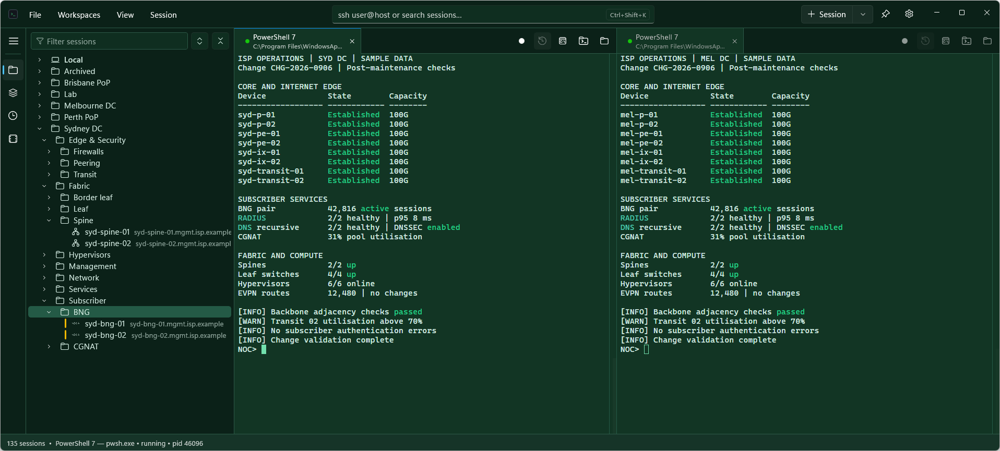
Split view with two live connections. The tree, quick connect, and tabs stay in one window.
Features
Put your sessions in folders. Give each one an icon and a color.
Type in the filter box to find a session. Press Enter to connect.
Quick connect is always at the top. Press Ctrl+K and type a name, or user@host.
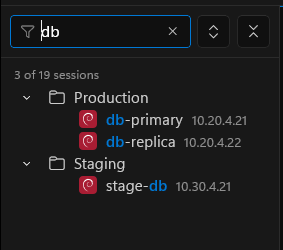
Open many sessions in tabs. Each tab shows its state — a green dot for connected, a blue dot for output you have not seen yet.
Split tabs side-by-side or vertically. You can add three, four or any number of splits as needed.
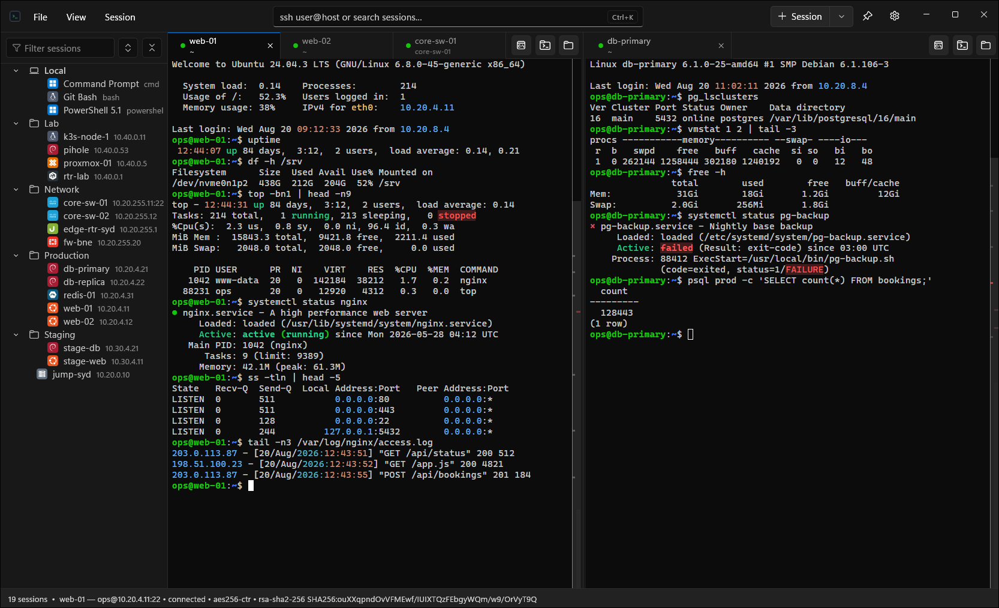
Interface names, IP addresses, and up or down states get their own colors.
The built-in rules know network output. You can add your own rules with a regular expression.
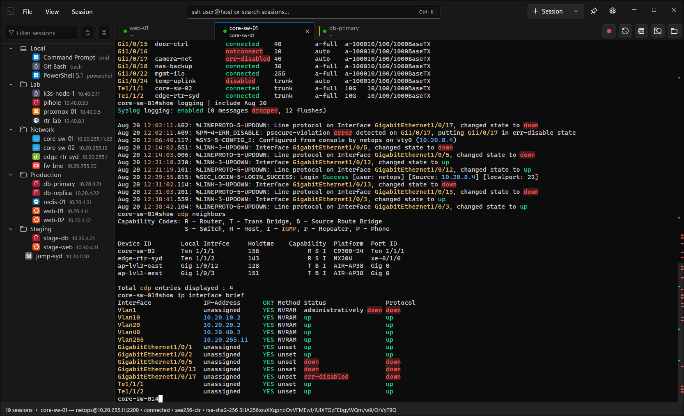
The scrollbar shows a mark for each command, error, and search match. Click a mark to go to that line.
A red mark shows a command that failed. Press Ctrl+Shift+F to search the output.
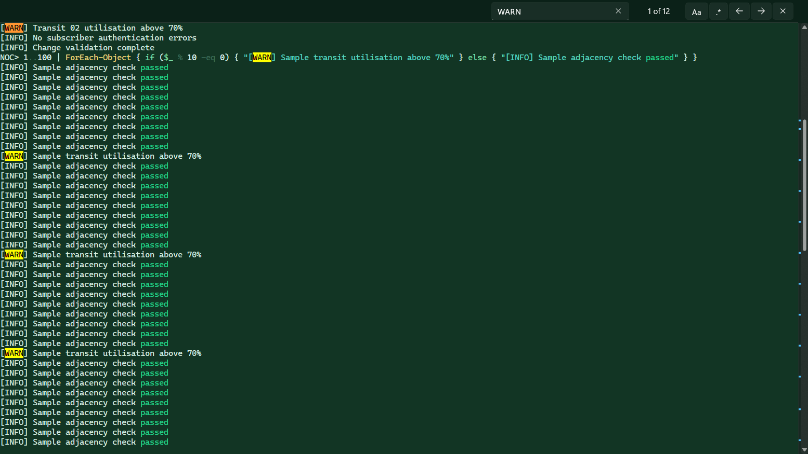
The commands panel lists each command from the session, with a green dot for success and a red dot for a failure.
Click a command to jump to its output. Copy the full output of any command with one click — also from the scrollbar tooltip.
Works with shell integration on the host, or without it: press Enter and Resesh finds the command itself.
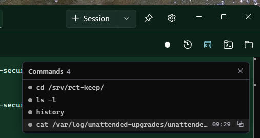
Run Codex, Claude Code or another AI agent in a tab. The tab shows the agent and its state.
A badge tells you when the agent waits for you.
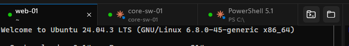
The file pane shows the files on the host over SFTP. Upload and download with drag and drop, or with the toolbar.
One click opens the pane at the folder your terminal is in.
With SSHFS-Win installed, one more click mounts the same folder in Explorer.
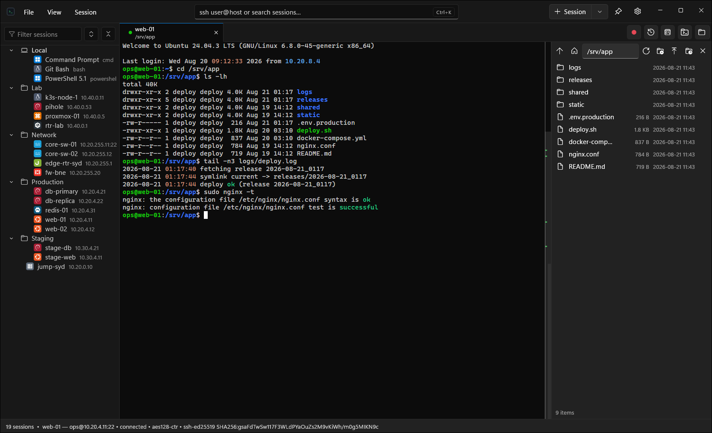
Turn each highlight rule on or off. Change a built-in rule, or add a new one.
The preview shows the result immediately.
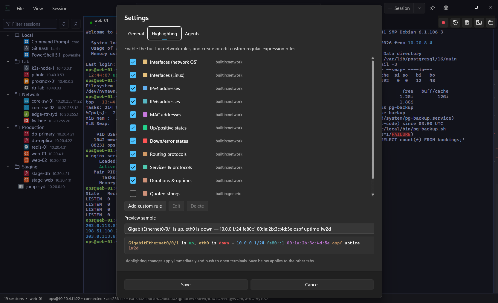
Pick a theme. The tree, the tabs, and the terminal follow it.
Each session can also keep its own theme, font, and highlight rules.
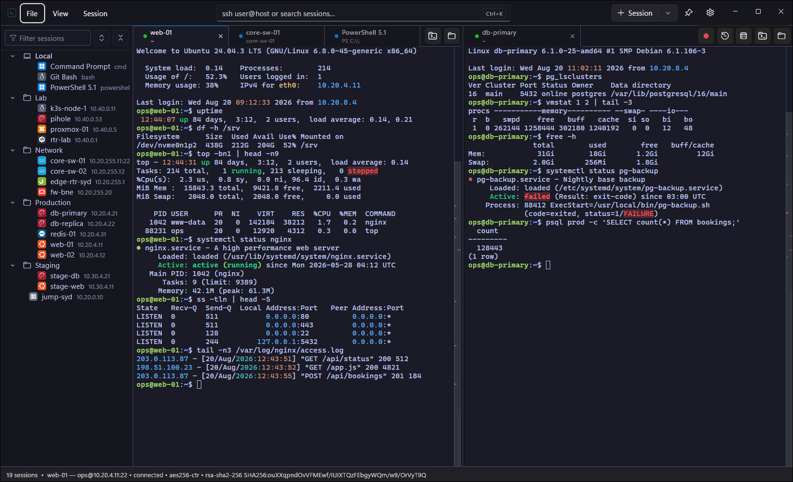
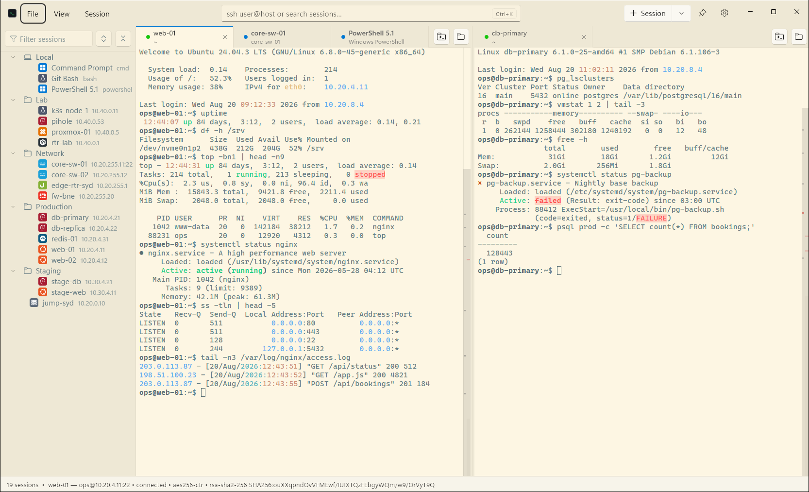
PowerShell, Command Prompt, WSL, and Git Bash — Resesh finds the shells on your PC and puts them under Local.
A local tab works like any other tab. Split it, search it, give it a theme. Ctrl+Shift+T opens your default shell.
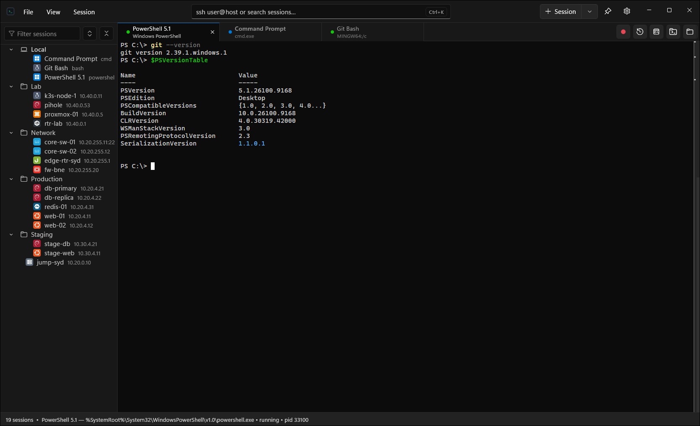
A lost connection does not stop your work. Resesh attaches again and shows the output you missed. tmux on the host makes it possible.
Import your saved SecureCRT sessions in one step.
Passwords and key passphrases go into Windows Credential Manager only. They never go into files on disk.
Register a private key one time. Use it in many sessions. Resesh never moves the key file.
Export one file with your sessions, settings, and known hosts. Import it on a new PC. Backups with secrets are encrypted.
FAQ
Windows 10 21H2 or later, and Windows 11. Resesh runs on x64 and Arm64.
Yes. Resesh is free and open source.
In Windows Credential Manager. Passwords never go into files on disk.
Yes. Register a private key one time and use it in many sessions. Resesh points to the key file and never moves it.
The host needs tmux. Turn on Persistent in the session options. Resesh does the rest.
Yes. Export a backup file on the old PC. Import it on the new PC.
No. Resesh has no cloud part. Your data stays on your PC.
Open an issue on GitHub.
Not yet. Maybe one day.
Downloads
Resesh is in beta. New builds come to GitHub first.
Latest release: v0.1.0
All builds, Arm64 portable ZIPs, and SHA-256 checksums are on the releases page. You can also build Resesh from the source code.